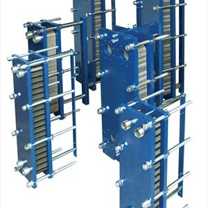

Ventiliatoriniai šildytuvai | RDE.LT
 Internetinė parduotuvė www.rde.lt Laimėk elektrinį paspirtuką Naujienos Prekių pristatymas Mokėjimo būdai Naudinga informacija Kontaktai +370 700 77772 | | [email protected] | Prekių krepšelis Prekių krepšelyje 0 Pažiūrėti krepšelį Prekių kategorijos IT produktų išpardavimas Kompiuterinė technika Televizoriai Mobilieji telefonai ir jų aksesuarai Fotoaparatai ir vaizdo kameros Vaizdo ir garso technika Stambioji buitinė technika Montuojamoji buitinė technika Smulkioji buitinė technika Kavos gaminimas Maisto ir gėrimų ruošimas Pjaustymas ir smulkinimas Valymui Drabužių priežiūra Klimato kontrolės įrenginiai Oro drėkintuvai (54) Oro sausintuvai (2) Oro valytuvai (22) Oro gaivikliai (19) Ventiliatoriniai šildytuvai (22) Tepaliniai radiatoriai (22) Konvektoriai (25) Ventiliatoriai (93) Mobilieji kondicionieriai (11) Meteorologinės stotelės / termometrai (16) Priedai klimato kontrolės įrenginiams (25) Siuvimo ir mezgimo mašinos Vandens filtrai ir jų priedai Virtuvės aksesuarai Žaidimų kompiuteriai ir jų priedai Grožis ir sveikata Riedžiai ir paspirtukai Auto prekės ir navigacija Išmanūs namai Namams ir sodui Aksesuarai Visos internetinės parduotuvės kategorijos Prekių atsiėmimo punktas S. Konarskio g. 2 - 99 Kontaktai Pradžia Smulkioji buitinė technika Klimato kontrolės įrenginiaiVentiliatoriniai šildytuvai
Prekių 1-18 iš 22 galimų Puslapis: 1 2 Deco D-321 ventiliatorinis šildytuvas Palyginti Akcija 12.99 € Į krepšelį Changer N26 ventiliatorinis šildytuvas Palyginti Kaina: 12.99 € Į krepšelį Changer N23/ NFD20A ventiliatorinis šildytuvas Palyginti Kaina: 13.49 € Į krepšelį Beper RI.092 ventiliatorinis šildytuvas Palyginti Kaina: 15.49 € Į krepšelį Beper RI.090 White ventiliatorinis šildytuvas Palyginti Kaina: 15.99 € Į krepšelį Beper RI.094 ventiliatorinis šildytuvas Palyginti Kaina: 16.49 € Į krepšelį Adler AD 7702 Black ventiliatorinis šildytuvas Palyginti Kaina: 16.49 € Į krepšelį Beper RI.096 ventiliatorinis šildytuvas Palyginti Kaina: 18.49 € Į krepšelį Beper RI.093 ventiliatorinis šildytuvas Palyginti Kaina: 18.99 € Į krepšelį Comfort C-320 ventiliatorinis šildytuvas Palyginti Kaina: 19.99 € Į krepšelį Jata TV64 ventiliatorinis šildytuvas Palyginti Kaina: 19.99 € Į krepšelį Electrolux EFH/ S-1120 ventiliatorinis šildytuvas Palyginti Kaina: 19.99 € Į krepšelį Beper RI.080 ventiliatorinis šildytuvas Palyginti Kaina: 22.49 € Į krepšelį Ferrari G60007 ventiliatorinis šildytuvas Palyginti Kaina: 25.99 € Į krepšelį Jata ADK2 ventiliatorinis šildytuvas Palyginti Kaina: 28.49 € Į krepšelį Millenniem HT600 White ventiliatorinis šildytuvas Palyginti Kaina: 44.99 € Į krepšelį Beper RI.162 Gold ventiliatorinis šildytuvasPalyginti Kaina: 51.99 € Į krepšelį Blaupunkt FHD501 ventiliatorinis šildytuvas
Palyginti Kaina: 57.99 € Į krepšelį Prekių 1-18 iš 22 galimų Puslapis: 1 2 RDE.LT. © 2020 UAB MK TRADE LT Apie autorių teises Lyginamos prekės 0 Palygink dabar Pašalinti viską Prekių pristatymas | Atsiskaitymo būdai | Prekių atsiėmimo punktas Cookies Sutinku Mūsų tinklapyje naudojami slapukai, jie padeda mums padaryti svetainę patogesnę. Sužinoti daugiau .